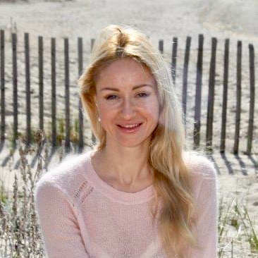

Hello, there !
I am a web designer with a background in graphic design and art. Most of the Graphic Design projects done using Adobe Photoshop, Illustrator, and In Design. I recently expanded my skills to web development, after completing General Assembly's Software Engineering Immersive program. In this program, I built webpages using HTML, CSS, React, Ruby on Rails, jQuery, and JavaScript. Most recently, I worked for New England Hemp Farm, where I created logos for hats, as well as t-shirts and clothes for dogs. In addition I am an artist . My artworks were exhibited in the USA, as well as in Russia, and are now a part of private collections around the world.